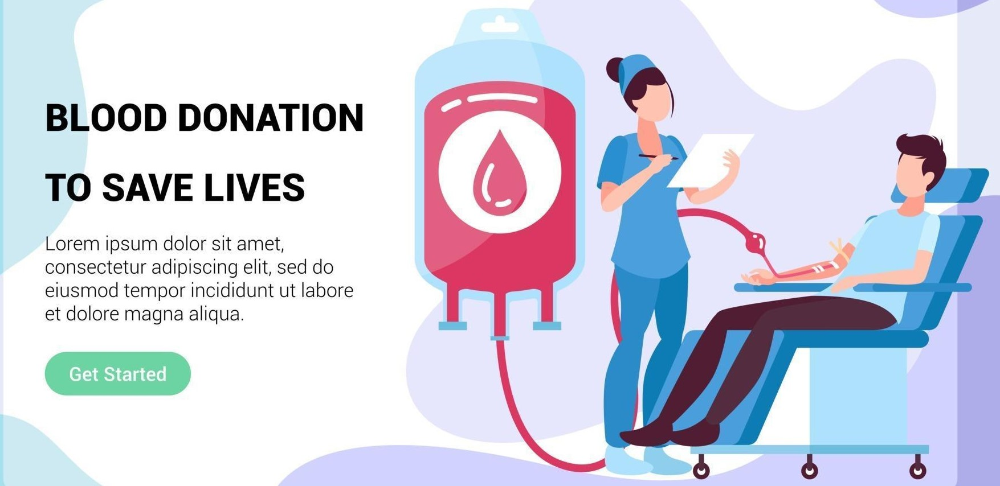

# During pre-donation screening, a blood bank employee will ask you some questions about your health, lifestyle, and disease risk factors. All of this information is confidential.
# An employee will perform a short health exam, taking your pulse, temperature and blood pressure. A drop of blood from your finger will also be tested to ensure that your blood iron level is sufficient for you to donate.
# All medical equipment used for this test, as well as during the donation process, is sterile, used only once and then disposed..
# One unit of donated blood can save up to three lives.
# You can donate blood every three months. It only takes 48 hours for your body fluids to be completely replenished.
# Scientists have estimated the volume of blood in the human body to be eight percent of body weight.
# There are 100,000 miles of blood vessels in an adult human body.
# A red blood cell can make a complete circuit of your body in 30 seconds.
# Donating blood is a safe, simple, and rewarding experience that usually takes 30 minutes.
# Requirement before Blood Donation is that your weight should be atleast 45 kgs , be at least 18 years old and be healthy in general.
# If you have any particular health concerns then inform the blood bank at the time of blood donation.
# After donating, it is recommended that you increase your fluid intake for the next 24 to 48 hours; avoid strenuous physical exertion, heavy lifting or pulling with the donation arm for about five hours; and eat well balanced meals for the next 24 hours.
# Smoking and alcohol consumption is not recommended after donation. Although donors seldom experience discomfort after donating, if you feel light-headed, lie down until the feeling passes.
About Donation
The average human body contains about five liters of blood, which is made of several cellular and non-cellular components such as Red blood cell, Platelet, and Plasma.
Each type of component has its unique properties and can be used for different indications. The donated blood is separated into these components by the blood centre and one donated unit can save upto four lives depending on the number of components separated from your blood.
Process
Blood Collected straight from the donor into a blood bag and mixed with an anticoagulant is called as whole blood. This collected whole blood is then centrifuged and red cell, platelets and plasma are separated. The separated Red cells are mixed with a preservative to be called as packed red blood cells.
Who can donate?
You need to be 18-65 years old, weight 45kg or more and be fit and healthy.
Lasts For?
Red cells can be stored for 42 days at 2-6 degree celsius.
How long does it take to donate?
15-30 minutes to donate.including the pre-donation check-up.
How often can I donate?
Male donors can donate again after 90 days and female donors can donate again after 120 days.
Compatible Blood Type Donors
| Blood Type |
Donate Blood To |
Receive Blood From |
| A+ |
A+ AB+ |
A+ A- O+ O- |
| AB+ |
AB+ |
Everyone |
| O+ |
O+ A+ B+ AB+ |
O+ O- |
| B+ |
B+ AB+ |
B+ B- O+ O- |
| A- |
A+ A- AB+ AB- |
A- O- |
| B- |
B+ B- AB+ AB- |
B- O- |
| O- |
Everyone |
O- |
| AB- |
AB- AB+ |
AB- A- B- O- |